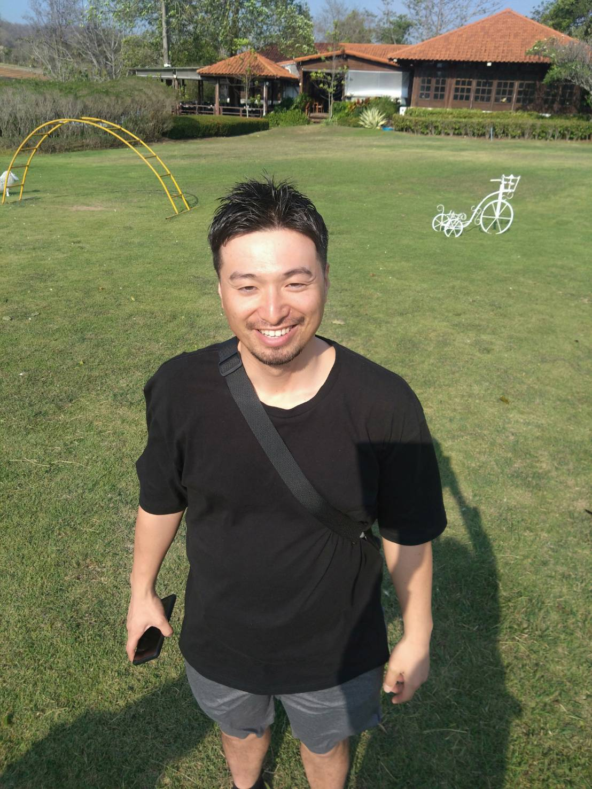

個別塾のように寄り添い, 集団塾のように教えてくれる 自習室

家より集中できて、
塾より自分のペースで。
中学生のための
「第２の勉強部屋」です。
＼ ご相談だけでも大歓迎です！ ／
公式LINEを友だち追加保護者の方から、
こんな声をよく聞きます。
- 家だとどうしてもスマホに
手が伸びてしまう… - 塾に行くほどでもないけど、
もう少し勉強してほしい - 部活が忙しくて、
毎週通うのが大変 - わからない問題だけ、
その場ですぐに教えてほしい
マサちゃんの自習室って
どんなところ？
① つまずいている箇所を
積極的に見つけにいく
進学塾で講師をしていた私がいつもいます！自習室としてただ場所を貸すだけでなく、5教科の「わからない」に寄り添って、丁寧に個別にその場でアドバイス。個別塾のような家庭教師のような対応を心がけています。
② 行きたい時に
行ける気軽さ
入会金はゼロ、1時間500円で安心の都度払い制です。部活の予定やテスト期間に合わせて、自分のスケジュールで無理なく通うことができます。
③ 塾選びの相談も
大歓迎です
集団塾・個別指導・家庭教師、すべてを経験してきました。「うちの子にはどんな勉強法が合う？」といったご相談にも、客観的にお答えします。
マサちゃんってどんな人？

碓井 雅也
元・都内進学塾講師 / ぶどう・りんご農家都内の集団進学塾で5年間講師を務めたのち、地元に戻り現在は農家をしています。東京時代に杉並区立和田中（藤原和博校長時代）にて学習ボランティアを経験し、親でも先生でもない「斜めの関係」を強く実感しました。この自習室も、地域の温かい居場所の一つになればと思っています。
- 長野高校 卒業 / 法政大学 卒業
- 都内進学塾講師（5年）
- 現在、小布施町にて ぶどう・りんご農家
合格実績
自分のペースで頑張って、志望校の合格を掴み取りました。
会場のご案内
よくある質問
予約は必要ですか？
はい、必要です。席数に限りがあるため、事前の公式LINEからのご予約をお願いしております。
先生に質問はできますか？
はい、もちろん可能です。
講師が常に常駐して頻繁に机を周ります。講師側から苦手箇所などを見つけて積極的に声をかけますので、「分からないことがあるけどなかなか質問できない」という内気なお子様でも安心です。
また、具体的な問題の解説だけでなく、学習の進め方などのアドバイスも随時行っています。
講師が常に常駐して頻繁に机を周ります。講師側から苦手箇所などを見つけて積極的に声をかけますので、「分からないことがあるけどなかなか質問できない」という内気なお子様でも安心です。
また、具体的な問題の解説だけでなく、学習の進め方などのアドバイスも随時行っています。
中学生以外も利用できますか？
現在は中学1年生〜3年生を対象としております。学年を絞ることで、学習に適した環境を維持しています。